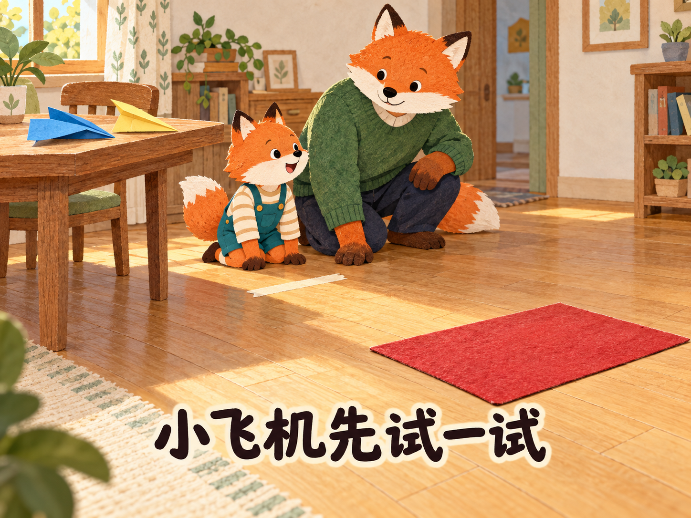

<!doctype html><html lang="zh-CN"><meta charset="utf-8"><meta name="viewport" content="width=device-width,initial-scale=1,viewport-fit=cover"><title>小飞机先试一试｜2026-10-05</title><style>*{box-sizing:border-box}body{margin:0;background:#f1eee4;color:#203b3e;font-family:system-ui}main{min-height:100dvh;display:flex;flex-direction:column;align-items:center;justify-content:center;padding:12px 12px calc(8vh + env(safe-area-inset-bottom))}img{max-width:min(100%,1180px);max-height:calc(92dvh - 110px - env(safe-area-inset-bottom));width:auto;height:auto;object-fit:contain}nav{display:flex;align-items:center;gap:24px;margin-top:14px;min-height:54px}button{min-width:70px;min-height:48px;border:1px solid #9aa99b;border-radius:12px;background:#fff;font-size:23px;color:inherit}button:disabled{opacity:.35}</style><main><nav><button id="prev" aria-label="上一页">←</button><span id="count"></span><button id="next" aria-label="下一页">→</button></nav></main><script>const prose=["小飞机先试一试","晚饭后，狐狸男孩桔桔把蓝纸飞机放在木桌上。“它要飞到红垫子那里！”狐狸爸爸收好碗，腾出一条空地，把起点贴在地上。小飞机没有发动机，桔桔要用手给它一个向前的起步。","桔桔站好，往前轻轻一送。飞机歪向一边，落在起点旁。他的耳朵垂下来：“它是不是不会飞？”爸爸蹲在旁边，没有给飞机判不及格。","“先看看哪里不一样。”他们把飞机放在桌上，桔桔发现一边翅膀折得低，一边高。他伸出手指：“这一边好像睡着了。”爸爸笑了，飞机没有睡着，只是两边不一样。","爸爸拿出自己的黄纸飞机，在空地轻轻试飞。“飞机向前时，翅膀和空气打交道。翅膀的样子会影响它怎么飞。”桔桔追着黄飞机的影子跑了两步，又回到蓝飞机旁。","“我能帮你折这一下吗？”爸爸问。桔桔摇头：“我想自己来。”爸爸把手收回来，扶住桌边的纸，让桔桔慢慢压平。蓝飞机仍是他的，只改变了那一边翅膀。","桔桔跑到房门口，准备使劲扔。爸爸指指地上的起点：“换了翅膀，又换地方和力气，就不容易知道谁起了作用。”桔桔回到标记旁，像刚才那样轻轻送出去。","这次飞机向前滑了一段，落在红垫子前。桔桔蹦起来：“修好了！”爸爸说：“再试试看。每次手上的力气也会有一点不同。”他们把落点记在纸上，没有急着宣布冠军。","第二次稍微偏了，第三次又朝前滑。桔桔看看三个落点：“它不是每次都一样。”他不再追着爸爸问飞得够不够远，而是把飞机拿近，看看翅膀有没有又折歪。","“红垫子是它的机场。”桔桔说。爸爸陪他又飞了一会儿。收起时，蓝飞机停在架子上，记录纸放在旁边。桔桔给爸爸的黄飞机也留了一个位置：“明天我们还可以试，不用今天就变成最好。”"];let current=0;const page=document.getElementById('page'),prev=document.getElementById('prev'),next=document.getElementById('next'),count=document.getElementById('count');function show(){page.src='page-'+String(current+1).padStart(2,'0')+'.png';page.alt=prose[current];count.textContent=(current+1)+' / '+prose.length;prev.disabled=current===0;next.disabled=current===prose.length-1}function move(n){current=Math.max(0,Math.min(prose.length-1,current+n));show()}prev.onclick=()=>move(-1);next.onclick=()=>move(1);document.onkeydown=e=>{if(e.key==='ArrowLeft')move(-1);if(e.key==='ArrowRight')move(1)};let startX=null;page.addEventListener('touchstart',e=>{startX=e.changedTouches[0].clientX},{passive:true});page.addEventListener('touchend',e=>{if(startX!==null){const d=e.changedTouches[0].clientX-startX;if(Math.abs(d)>45)move(d<0?1:-1);startX=null}},{passive:true});show();</script></html>
